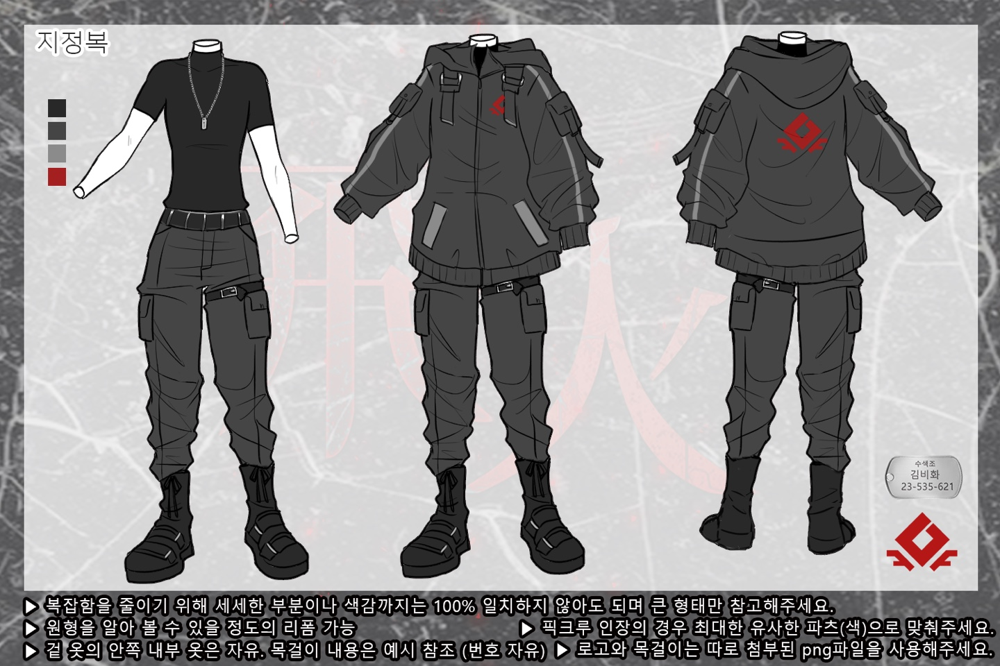

새하얀 눈이 전 세계를 뒤덮었습니다. 눈이 먼지처럼 흩날리기만 하던 곳에도, 이미 충분할 정도로 눈이 소복히 쌓이던 곳에도. 유독 추웠던 1월, 얼어붙어야 할 존재가 움직이기 시작했습니다.
좀비라는 건 그저 단순한 장르 요소라고만 생각했습니다. 그 누가, 좀비를 현실에서 마주할거라 알았을까요. 그 어떤 전조증상도 없이 사람들은 서로를 물어뜯었습니다. 단순 폭력 현장이라기엔, 단순 마약 사건이라기엔... 전 세계에서 동시다발적으로, 눈밭이 붉게 녹아내리기 시작했습니다.
2026년 2월
조용한 눈밭에서 들리는 거라곤 이따금 울부짖는 좀비의 소리 뿐입니다. 많은 사람들이 물려 죽었고, 되살아났으며, 움직였습니다. 물론 이 추위와 공포를 이겨내지 못 해 얼어붙은 시체가 되어버린 사람들이 더 많을까요? 그 무엇도 알 수 없습니다.
왜 이런 좀비사태가 벌여졌는지, 그 아무도 알려주지 않았습니다. 수많은 위험과 죽음 끝에 우리가 알 수 있는 건 너무나 작은 정보들이었습니다. 좀비에게 물리면 감염된다, 좀비의 머리를 노려야한다, 좀비는 소리와 빛에 반응한다. 추위를 피하기 위해 불을 피우면 좀비가 반응하니, 불도 함부로 피우지 못한다. 그렇게 사람들은 삼삼오오 모여 살아남기 위한 공간을 만들기 시작했습니다.
황창식을 중심으로 뭉친 사람들이 드디어 집을 만들었습니다. 아직은 초라할지라도, 결국은 견고히 버텨낼 쉘터. 비화. 이것은 비화 사람들의 이야기.
2028년 2월
비화 쉘터엔 여러명의 사람이 있고 여러가지의 팀이 있습니다. 요리팀, 의료팀, 재배팀, 도축팀, 건축팀 등등. 그리고 우리는 비화 쉘터의 수색팀 소속입니다. 쉘터의 대장인 황창식의 권유로 수색팀이 되었을 수도, 당신이 직접 찾아가 수색팀으로 넣어달라 요구를 했을 수도 있겠네요.
수색팀은 말 그대로 쉘터의 외•내부를 수색•순찰 하는 팀입니다. 쉘터가 불안정하던 2년 전에는 내부 순찰을 동행 했지만 견고함을 갖추기 시작한 후에는 이름 뿐인 내부 순찰을 주기적으로 한 번 씩 할 뿐입니다.
우리의 주된 임무는 외부 수색입니다. 우리가 돌아다닐 수 있는 우리의 지역 내에 특이사항은 없는지 확인하고, 특이사항이 있을 경우 조치하는 것. 주 된 특이사항은 좀비 소탕, 야생동물 사냥 뿐입니다. 그도 그럴게, 이 지역을 3년째 돌아다니고 있는걸요. 불안하던 과거부터 착용하던 군번줄은 이젠 단순한 악세사리에 불과합니다.

이미지가 잘 안 보이신다면 해당 이미지를 클릭해주세요. 새 창에서 원본 이미지를 확인할 수 있습니다.